SSO with Microsoft Windows Active Directory for your workspace
Note
Workspace-level SSO can only be configured when unified login is disabled. When unified login, your workspace uses the same SSO configuration as your account. Databricks recommends enabling unified login on all workspaces. See Unified login.
Microsoft Windows Active Directory (AD) provides identity based access controls for a wide range of Microsoft products. You host Windows AD, either in your Azure tenant or on your premises. With Windows AD, you can authenticate third party extranet applications such as Databricks using Windows Active Directory Federation Services (AD FS). AD FS uses SAML 2.0.
This article shows how to configure AD FS as the identity provider for a Databricks workspace. To use Microsoft Entra ID (formerly Azure Active Directory) hosted in your Azure tenant for SSO with Databricks, see SSO with Microsoft Entra ID (formerly Azure Active Directory) for your workspace.
To configure SSO in your Databricks account, see Set up SSO in your Databricks account console.
Note
The following guide is for configuring AD FS integration using Windows Server 2012 R2 Active Directory Federation Services version 6.3.0.0. Existing customers who need support for other versions of AD FS or Azure Directory Services can contact help@databricks.com. If you are a new customer, contact sales@databricks.com.
Windows AD typically uses a short employee ID or employee username as the authentication principal, rather than an email address. When a user logs in to Databricks, the user’s workspace directory is automatically appended to the username to create an email address. For example, the username
john.doemight becomejohn.doe@example.com.Time synchronization issues can lead to a situation where all AD FS logins are invalidated. Make sure the clock on your AD FS server is updated.
If you are having trouble enabling AD FS SSO and your organization uses multiple certificates, contact Databricks at help@databricks.com (for existing customers) or sales@databricks.com (for new customers).
Requirements
Install and configure the following Windows services:
Windows Domain Server
Windows DNS Service
Microsoft IIS
Windows AD
Windows AD FS
For details on configuring these services, see Microsoft KB c66c7f4b-6b8f-4e44-8331-63fa85f858c2.
Install a signed SSL certificate for your AD FS login page and the fingerprint for that certificate.
Verify that all user objects in AD have an email address attribute. This is required to map AD users to Databricks users.
In Databricks, make a note of the SAML URL.
As a workspace admin, log in to the Databricks workspace.
Click your username in the top bar of the Databricks workspace and select Admin Settings.
Click on the Identity and access tab.
Next to SSO settings, click Manage.
Go to Single Sign On.
Copy the Databricks SAML URL.
Configure AD FS
In this section:
Configure the AD FS Federation service
Go to the AD FS management console.
Click Edit Federation Service Properties on the right side action bar.
Verify that the federation service name and identifier both match the DNS entry for the environment. The following example doesn’t use a custom DNS entry:
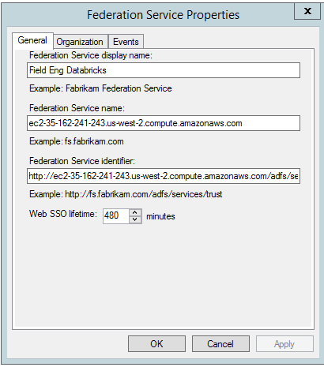Databricks uses SAML 2.0 as the standard authentication mechanism. To verify that your AD FS service supports SAML 2.0, go to AD FS > Service > Endpoints and confirm that the URL Path
/adfs/lsexists.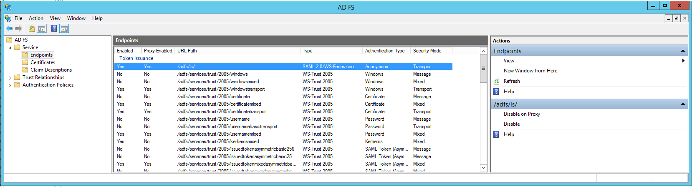The first time you configure AD FS to authenticate a client outside of your corporate intranet, you must enable Intranet Forms Authentication.
Go to AD FS Management application > AD FS > Authentication Policies > Edit Global Authentication Policy.
Select Intranet Forms authentication.
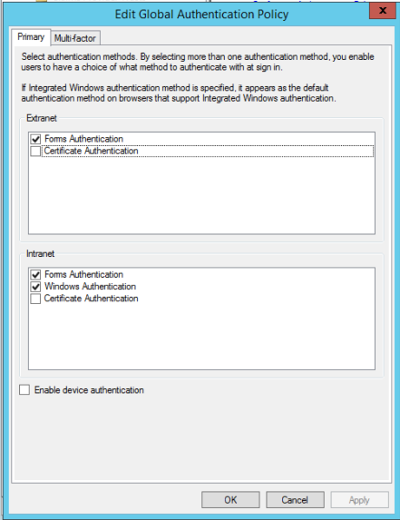To view the SSO page for your organization, go to
https://<your-sso-domain>.com/adfs/ls/idpinitiatedsignon.
Configure the trust relationship
To add Databricks as a relying party trust:
Go to AD FS > Trust Relationships > Relying Party Trusts.
Follow the instructions to create an AD FS relying party trust.
Set Display name to Databricks.
If desired, enter information in Notes.
Click Next.
Click AD FS profile.
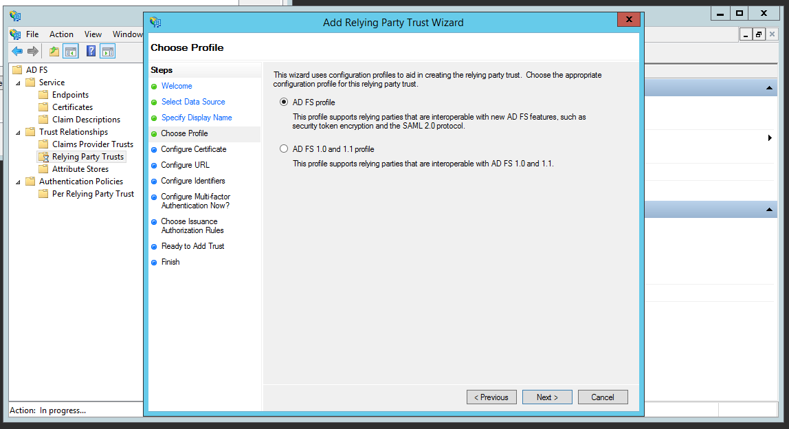Configure a certificate for encryption between AD FS and Databricks.
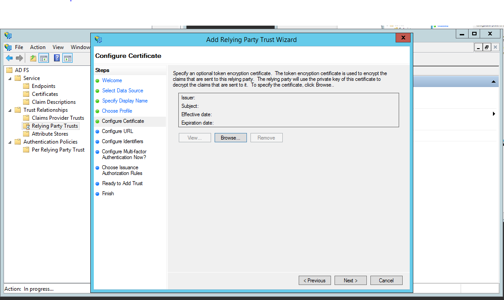Under Configure URL, click Enable support for the SAML 2.0 WebSSO protocol.
Enter the Databricks SAML URL you copied in Requirements.
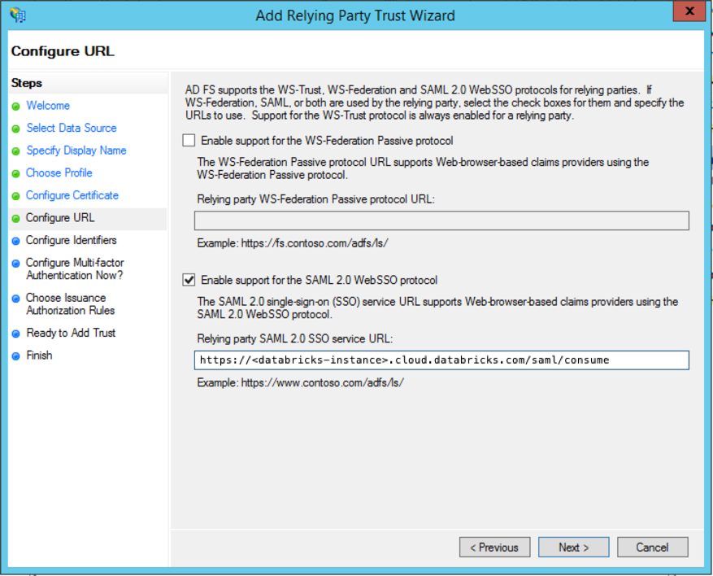In Configure Identifiers, enter the Databricks SAML URL again.
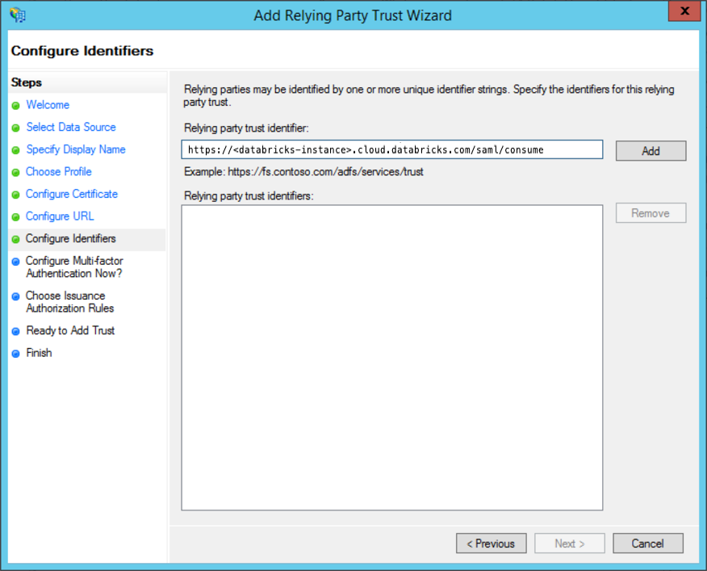Click Add to add another identifier. Enter the Databricks workspace URL, such as
https://<databricks-instance>.cloud.databricks.com.
Next to Configure Multi-factor Authentication …, select I do not want to configure ….
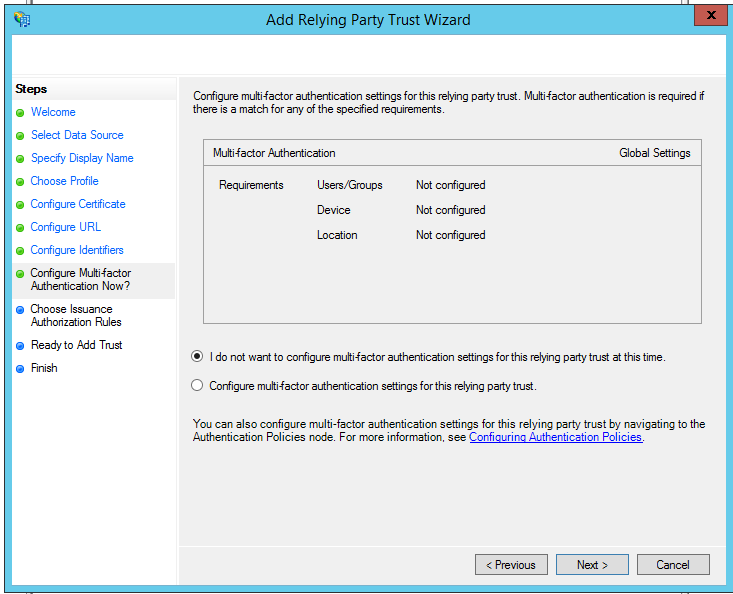Under Choose Issuance Authorization Rules, select Permit all users to access this relying party. After the testing period, you can update this setting to selectively allow Active Directory groups or members to access Databricks.
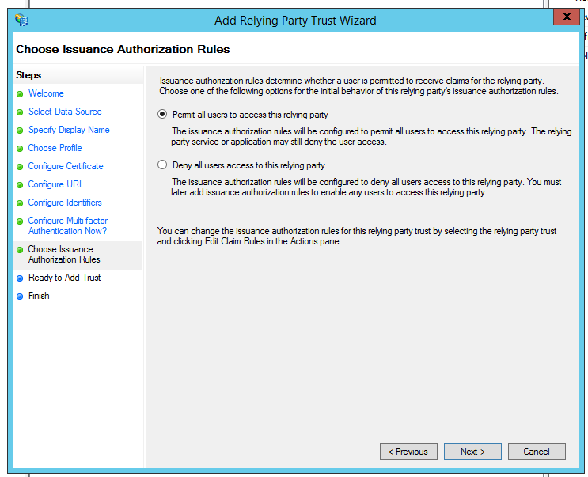Click Next.
Review the configuration.
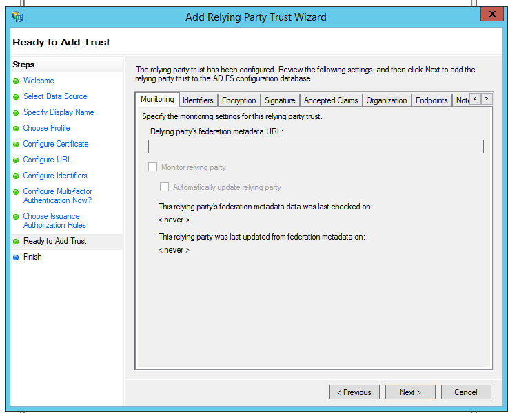Leave Open the Edit Claim Rules … selected, then click Close to finish adding the relaying party trust.
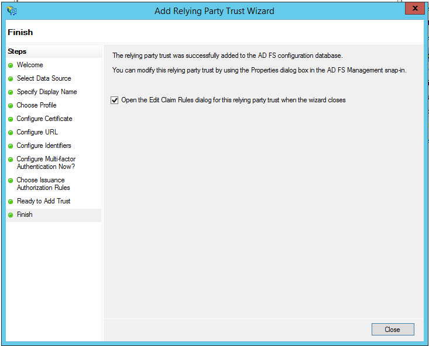Keep this dialog open and continue to Add transform claim rules.
Add transform claim rules
Claim rules in AD FS map user objects in Windows AD to users in Databricks. To create a claim rule to map users based on their email addresses:
If necessary, click Relaying Party Trusts and click Databricks.
In the right actions bar, click Edit Claim Rules, then click Add Rule.
Click Send LDAP Attributes as Claims.
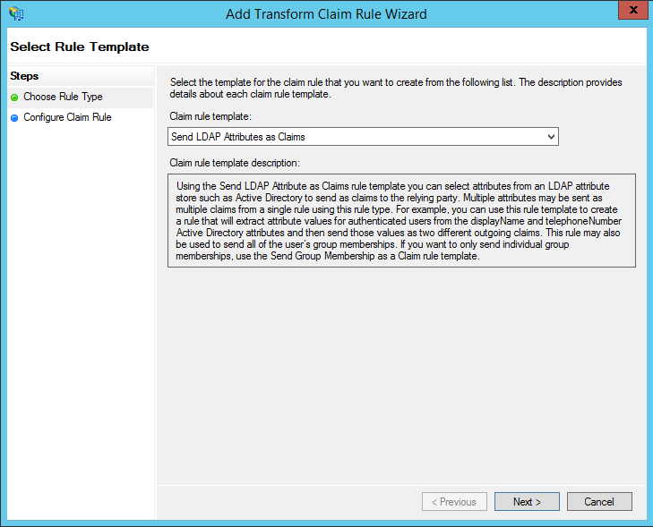Set the Claim Rule Name to Outgoing Databricks LDAP Email.
Set the Attribute Store to Active Directory.
Select the LDAP attribute used by your company for email addresses. The default is E-Mail Addresses. Map it to Name ID and E-Mail Address:
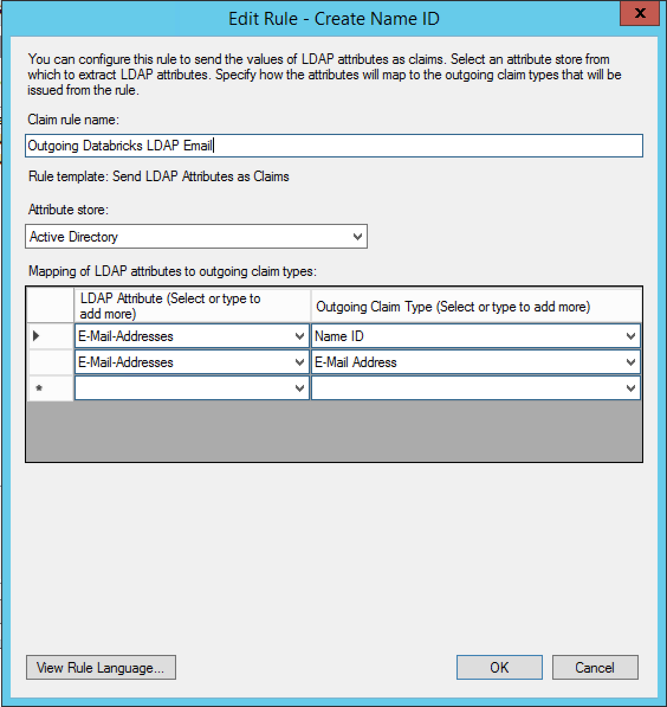Click Finish.
Click Add Rule to add another rule.
Set Claim Rule Template to Transform an Incoming Claim.
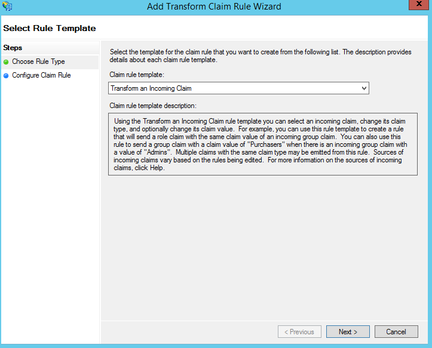Set Claim Rule Name to Incoming Databricks LDAP Email.
Set Incoming claim type to E-Mail Address.
Set Incoming name ID format to Unspecified.
Set Outgoing claim type to Name ID.
Set Outgoing name ID format to Email.
Click Pass through all claim values.
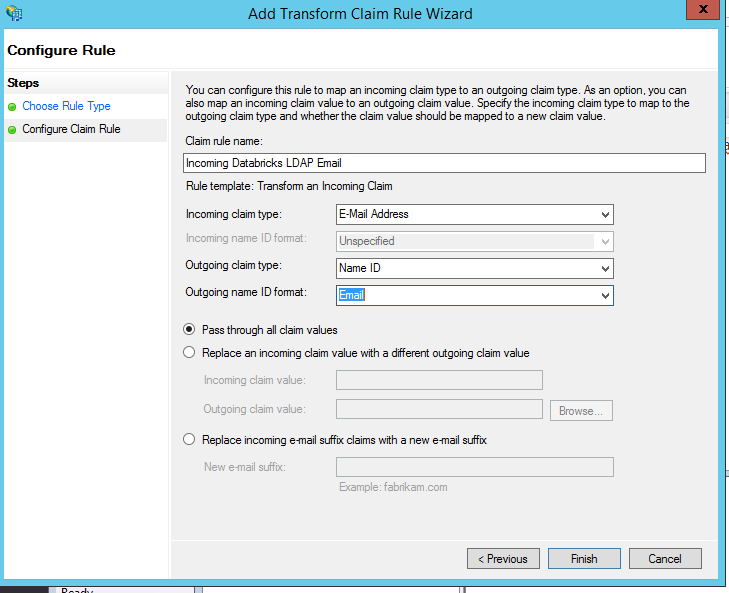Click Finish.
Click Apply then Ok to return to the main screen.
Change Signature to SHA-256
On the AD FS Relying Party Trusts screen, select Databricks.
Click Properties on the Action bar.
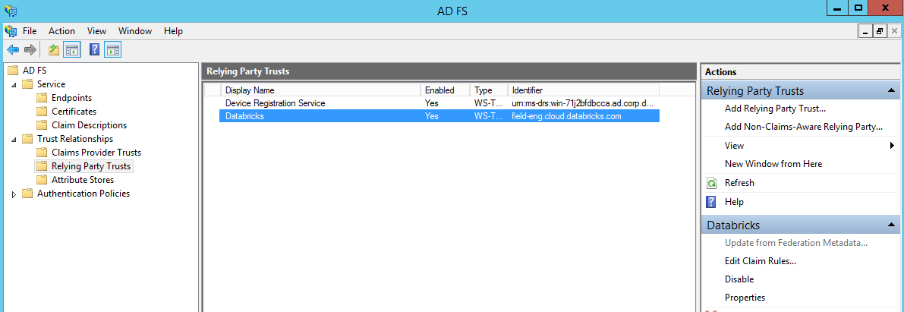Go to the Advanced tab.
Set Secure hash algorithm to SHA-256.
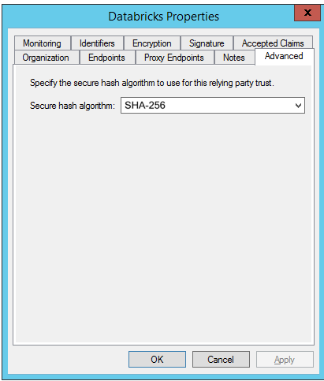
Copy the AD FS service certificate
From the AD FS Management Console go to AD FS > Service > Certificates.
Find the Token-signing certificate. Click View Certificate in the action sidebar. 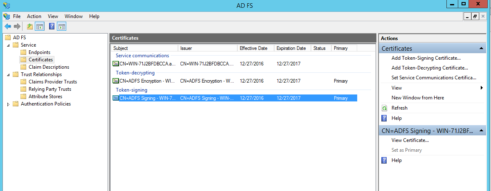
Click the Details tab.
Click Copy to File.
Choose Base-64 encoded X.509 (.CER) when prompted.
Open the file with Notepad or another text editor.
Copy the text between
-----BEGIN CERTIFICATE-----and-----END CERTIFICATE-----.
(Required) Configure signing of the SAML response
To configure signing of the SAML response and the SAML assertion within it, use the following PowerShell command. If your relying party trust is not named Databricks, set -TargetName accordingly.
Set-ADFSRelyingPartyTrust -TargetName Databricks -SamlResponseSignature “MessageAndAssertion”
For more information about this requirement, see Verify that the SAML response is signed.
Configure Databricks
As a Databricks administrator:
Go to the admin settings page, click the Identity and access tab.
Click Manage next to SSO settings.
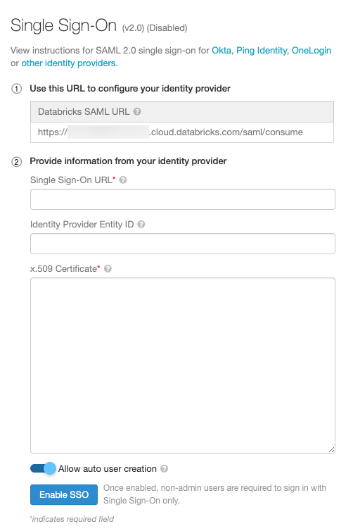Set Single Sign-On URL to
https://<your-sso-domain>.com/adfs/ls/.Set Identity Provider Entity ID to
https://<your-sso-domain>.com/adfs/services/trust.Paste the certificate from Copy the AD FS service certificate into the X.509 Certificate field.
Click Enable SSO.
Optionally, click Allow auto user creation.
Test the configuration
In an incognito browser window, go to your Databricks workspace.
Click Single Sign On. You are redirected to AD FS.
Enter your AD FS credentials. If SSO is configured correctly, you are redirected to Databricks.
If the test fails, review Troubleshooting.